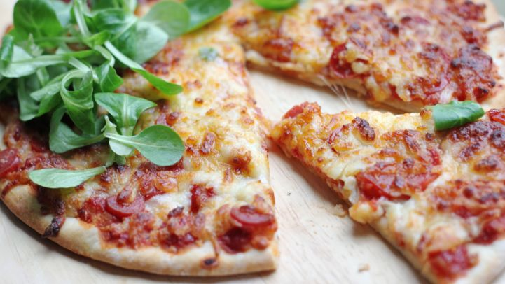

This quick and easy pizza will surely have guests coming back for more!
Just some simple ingredients for the dough and toppings and you can be well
on your way to make a tasty pizza in less than an hour. I hope you enjoy this
amazing recipe!
Ingredients
- DOUGH
- Two and a half cups of flour
- One teaspoon of salt
- One teaspoon of sugar
- One tablespoon of fast rise yeast
- One cup of water
- One tablespoon of oil
- TOPPINGS
- One fourth cup of tomato sauce
- One teaspoon of italian seasoning
- Half a teaspoon of garlic powder
- Half a teaspoon of salt
- One eighth a teaspoon of pepper
- One and a half cups of pepperoni slices
- One cup of shredded mozzarella cheese
- One cup of shredded monterey jack cheese
- Three tablespoons of grated parmesean cheese
Steps
- In a large bowl, mix the first four ingredients.
- Mix water and oil; add to flour mixture.
- Turn onto floured surface; knead for two minutes.
- Place in a grease bowl; turning to grease top.
- Cover and let rise for twenty minutes.
- Punch down; place on twelve inch, greased pizza pan.
- Pat into a circle.
- Topping: Mix the first five ingredients and spread over crust.
- Put a few pepperoni slices on top of sauce.
- Sprinkle with half of the mozzarella; half the monterey jack, and half th parmesean
- Put the rest of the pepperoni on.
- Repeat the cheese layer.
- Bake at four-hundred degrees for twenty minutes or until light brown.
- Voila! Enjoy your pizza I prefer to add some zesty lime to mine!